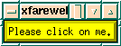
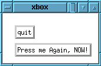
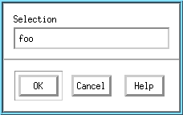
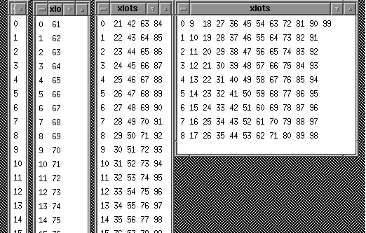

Rensselaer Polytechnic Institute
ECSE-4750 Computer Graphics, Fall 1999
Class 3, Tues Jan 18
RCS Programming Notes
- Many people have modified their .login.profile to search
for ACM versions of programs before RCS versions. This is
generally nice since the ACM has lots of good programs.
However, the ACM version of make is incompatible
with the RCS version. If you use the ACM version, then
your X programs won't link. There are 2 solutions.
- Edit your .login.profile to remove the reference
to acm, or
- Say /bin/make xhello (or whatever program)
instead of saying make xhello.
- demoio.C is a really short program
that demonstrates input/output in Unix. It reads in
numbers 3-at-a-time, and writes the product.
- You can use files with it thus:
demoio OUTFILE
Meta-Learning
You should be learning about X on three levels.
- You're learning a mess of facts about a specific
important package, X with Motif. (Actually, I'm shielding
you from much of the mess.)
- You're learning about GUIs in general. Visual C etc has
things like widgets and callbacks, but the names are
different.
- You're learning how to learn living, complicated, systems
in general. The doc is not perfect; things may break if
you push them too hard, and you have to modify programs
while only partly understanding them.
X Themes
- Client - server.
- Client: who does major computation
- Server: controls display
- keyboard, mouse, display <-> server
<-> client, client, ...
- Server functions:
- provides multi-client access
- processes client messages and responds
- draws on display
- maintains local data structures: backing store,
color maps, fonts, graphics context
- Security: xhost, cookies, mxconns
- Window manager functions
- rules the display
- does layout, moves windows, iconifies
- routes input to the window with focus
- window title bars and their menus
- You can kill the WM, and with luck, restart it or
another one. Make sure that there will be an
xterm window on top, or you're dead. If the KB is
dead, try cutting-and-pasting the command.
Finally, telnet into the workstation, if that's
allowed, or call a consultant.
- X routine hierarchy
- Each level has concepts, data types, routines.
- (Lowest level) X ICCCM protocol: events,
requests, replies, errors.
- Xlib - direct interface
- Xt - adds OO concepts, like the concept of
widgets, but not specific widgets.
- some widget set: Motif (Xm), Athena (Xaw), etc.
- (Highest level) User program: calls Xm, Xt, Xlib.
Grouping Concepts in X
X groups related concepts or items whenever possible. Here are
examples:
- Widget instances are grouped into widget classes, such as
the label widget class. All the widgets in one class have
approximately the same behavior. E.g., the pushbutton
class accepts mouse button clicks. This also lets you set
a resource for all the widgets of a given class. The
following will set the background to green for all label
widgets, except for mylabel, which will be red. (Specific
settings override general ones.)
*Label.background: green
*mylabel.background: red
- Related widget classes are grouped into a tree-structured
hierarchy extending up to the core widget class. They
inherit properties just as in C++.
- Related programs may be grouped by giving them the same
class name in XtVaAppInitialize. This lets you set
resources for all the programs in the class at one time.
- Related resources are grouped into resource classes. This
lets you set all the resources in the class at once.
Class names have their first letter capitalized. If that is
'X', then the first two letters are capitalized. This is not a
law, but merely a convention.
X Man Pages
Here are a sampling of man pages.
- XtVaAppInitialize,
- XtVaCreateManagedWidget,
- XtRealizeWidget,
- XtAppMainLoop,
and.
- XtAppAddActions.
I formatted them like this on my private Sun:
cd /afs/rpi.edu/campus/X11/R6/core/1.0/sun4c_41/man/
ptroff -t -man /afs/rpi.edu/campus/X11/R6/core/1.0/sun4c_41/man/man3/-
XtVaAppInitialize.3 > /dept/ecse/graphics/XtVaAppInitialize.ps
- telnet to rcs.rpi.edu, then run Adobe distill. (Distill
is installed only on the telnet machines.)
Notes:
- Unfortunately, ptroff is not on RCS. You can display the
man pages on xterm with the man command, after adding the
appropriate directories to MANPATH, e.g.,
MANPATH=$MANPATH:/campus/X11/R6/core/1.0/sun4c_41/man
man XtVaAppInitialize
- The SGIs seem to have a brain-damaged version of the man
command, which doesn't do the X pages very well.
- Some of the man pages include other files, which is why I
cd'ed to the dir above the dir with the man page to
format it.
- Many routines have alternate versions. To keep things
sinple, in this case, I present one version in class, and
ignore the others.
- Nroff/troff implements tables with a preprocessor, which
much be run first on man pages with tables. It should be
ok to run it even when there are no tables.
- As usual, the man pages have more info than you need.
Part of the fun is skimming thru them to get a sense of
their contents, and then to extract what you need.
Adding Translations to Xterm
Here is an example of using a translation table of event and
actions to add a few things to xterm. Function keys
F2 and F6 cause commands to be entered. F2 is especially useful
inside ftp. If I hold shift down when leaving the window, then
the font is set smaller (assuming that the default font is
small), and if I hold shift down when entering, the font is
restored. string and set-vt-font are
actions defined inside xterm; see the man page.
XTerm*VT100.Translations: #override \
<Key>F2: string("ls -FC") string(0x0d) \n\
<Key>F6: string("date") string(0x0d) \n\
Shift<Enter>: set-vt-font(default) \n\
Shift<Leave>: set-vt-font(1)
Extra Info on X
Several people have asked about reading more about X, or about
buying books on it. All of the following should be in the
library.
- For reading, see the intro to any X book, such as
- Keller, Brian J., A practical guide to X window
programming : developing applications with the Xt
Intrinsics and OSF/Motif, QA76.76.W56 K45 1990
- Young, Douglas A., The X Window system :
programming and applications with Xt / Douglas A.
Young, QA76.76.W56 Y67 1994
- Valerie Quercia and Tim O'Reilly, Definitive
guides to the X Window System vol 3: X Window
System user's guide, Motif edition, QA76.76.W56
D44 1990a v.3
- vol 4 of the above series.
- I don't recommend that you necessarily buy the above. If
you want to buy something, look at volume 6a.
- While the above commercial books have more examples and
explanation, the online docs have more precise info. This
is because the online docs were written by the people who
implemented X, while the books were generally written
from the online docs.
Useful X Programs
Here are a number of somewhat useful programs, some of which
I've mentioned before, to determine information about the system.
See the man pages for a description. E.g., editres displays the
widget tree of another program that is running, and lets you
change that program's resources while it runs.
appres editres viewres xlsclients xlswins xmag xprop
Xfarewell - Attaching User Defined Actions
to Events
The program /dept/ecse/graphics/Classes/04/xfarewell.c
with its resource file /dept/ecse/graphics/Classes/04/XFarewell.ad
illustrate adding a user-defined action to a button or key event
of a pushbutton widget. It shows this:

Actions and events are lower-level than callbacks. I.e., they
are messier but more powerful. Also, only callbacks can be
attached to higher-level things such as destroying the widget.
Xbox - Resources, Bulletinboard, Compound
Strings, Popup & Dialog etc.
/dept/ecse/graphics/Classes/04/xbox.c
illustrates these things:
- Setting resources when a widget is created.
- A bulletinboard widget. You have to specify its kids'
locations explicitly, like pinning a note on a real
bulletin board.
- Converting a text string to the Motif compound string
format needed when setting a label inside the program.
- Creating a popup.
- Creating a Motif convenience popup dialog widget.
- Putting callbacks on two of its buttons, and
- Reading the string the user typed in it.
There is no resource file. The top-level window is this:

and the popup is this:

The popup has no title bar since I use fvwm, and my .fvwmrc is
set that way.
Children of the Top-Level Widget
This is relevant to popups, but is messy.
- Widget instances form a hierarchy.
- Windows form a hierarchy, starting with the root window.
- A child window is completely contained in its parent.
Anything outside is clipped.
- The widget hierarchy almost completely matches the window
hierarchy, with a few exceptions.
- An unrealized widget has no window.
- A popup window is the child of the root window; else it
would be invisible.
- It doesn't much matter who the parent of the popup widget
is.
- A toplevel widget can have more than one child widget,
but its window can have only one child window.
- Any widget children past the first must be popup widgets;
their windows, when they exist, are children of the root
window (or window manager if it exists).
References:
/campus/osf/motif/1.2.2/distrib/src/doc/man/Shell.3X)
says:
``Shell is a top-level widget (with only one managed
child) that encapsulates the interaction with the window
manager.''
/campus/osf/motif/1.2.2/distrib/src/doc/programGuide/ch02.sm
says:
``(The approach described in class) is to designate one
top-level widget the application, enclosed in an
ApplicationShell, and make the other TopLevelShells popup
children of the ApplicationShell. A popup child is one whose
window is a child of the root window and whose geometry is
not managed by its parent widget.''
Extra children might be allowed if unmanaged; we'll ignore
this case.
Font versus FontList
In general, Athena widget programs use the font resource.
Motif ones take their fonts from a fontList; their default font
is the first one on the list. To make xhello use a
different font, add this to XHello.ad:
*fontList:7x13
or cut and paste a font from xfontsel. That is,
- Use xfontsel to select a nice font.
- Click on Select to put that font name into the
server's X selection buffer. (This is somewhat like a cut
buffer.)
- Use the middle mouse button to paste the selection into
the editor. This step may fail, in which case you're out
of luck.
C Strings Versus Motif Strings
- This is relevant since some routines require C strings as
arguments, while others require Motif compound strings.
- C strings are arrays of 8-bit chars. The only structure
is that many programs assume that there is a null char at
the end. The chars may be ASCII, which uses 7 bits, with
the hi bit being 0 or a parity bit. Alternatively, the
chars may be 8-bit ISO8859, which allows a single byte to
represent an accented char, such as éèêc, and so on.
More on this in a later handout.
- Motif compound strings allow wide (16-bit) chars, like
Kanji, and contain embedded font and direction info.
- C routines like
strcpy and strcat
do not alloc storage. You must do that. They modify their
first arg.
- Motif routines, like
XmStringConcat, do not
modify their args. They do alloc space for the answer,
and return a pointer to it. You should free the space
when you don't need the string any more. However, if you
free the space too soon, then unpleasant things may
happen.
Xlots.c
There is no resource file for /dept/ecse/graphics/h03/xlots.c.
It illustrates an array of lots of widgets. Grab the corner of
the window and resize it; watch the row column widget rearrange
its kids. Here a screendump showing several runs after the window
has been resized differently.

Xmove.c
/dept/ecse/graphics/Classes/04/xmove.c
shows moving a widget by getting and setting its position
resources, and also changing a label dynamically.
Click and the widget and watch it. Then grab and move the
widget and click again. The amount that the widget moves depends
on your window manager.
This is the resources file, Xmove.ad .
- Play with the demo programs on the SGI workstations.
Don't hand in anything for this.
- Use the camera on the SGIs to photograph yourself or your
team, print the photo, write your name on it, and hand it
in. If you would prefer not to submit your photo, then
photo anything else instead.
- How would you start an xterm window that was 72 columns
wide, 34 rows deep, and placed against the lower right
corner of the screen. (Read the X man page.)
- One large application of graphics is in Hollywood. See Linux
Helps Bring Titanic to Life in issue 46 of the Linux
Journal. here
for one example. Now, answer some questions on that.
These are to be ``back-of-the-envelope'' calculations;
anything within a factor of 5 of the correct answer is
ok. In fact, the numbers are so imprecise, that the
inherent accuracy is probably only a factor of 2.
- (a)
- What HW was used for the graphics animation? Why?
- (b)
- What OS was used? Why?
- (c)
- How many CPU hours were used, approximately,
assuming that 105 Alphas were used?
- (d)
- How many frames are in the movie?
- (e)
- How many CPU minutes did the average frame take?
- (f)
- Assuming that one frame has 6,000,000 pixels, and
that the Alpha used was about 30 MFLOPS, which
was just a wild guess, how many floating point
operations did each pixel take?
- (g)
- The URL that I gave is in Italy. Use your
favorite search engine (I recommend google) to
find a closer URL.
- Browse the man pages mentioned today, and tell me five
things that XtVaAppInitialize does.
- Get the files Makefile, xhello.c, xgoodbye.c,
and XGoodbye.ad from
/dept/ecse/graphics/Classes/02/. Compile and run xhello.
Run it without recompiling with a different foreground
color, and background color, by specifying extra command
line arguments. The list of official colors should be in
/usr/lib/X11/rgb.txt.
- Now compile xgoodbye.c in the same way as for xhello.
Run it, click on the window that appears, and observe the
message. Modify the message by editing a file XGoodbye.ad
like the following, but including your name.
*goodbye.labelString: Au Revoir to WRF
- Extend xgoodbye.c by adding several other
pushbutton widgets, like goodbye, but with names that are
some top-level options in RPInfo. When it is pressed,
they should print a string containing the choices at the
next level, and not quit. E.g., there should be a command
widget labeled Academics that causes Arch Eng
Sci Mgt HSS ROTC to be printed. You do not need to be
exhaustive; it's ok to list only two items in each case.
Do not do anything like actually calling RPInfo.
This
will require learning and using a composite rowcolumn
widget under toplevel to hold the other widgets. Do it
thus:
- (a)
- Include
RowColumn.h just as Pushb.h
.
- (b)
- Instead of the quit widget being under toplevel,
create a new widget, called rowcolumn, under
toplevel. Make its class
xmRowColumnWidgetClass.
- (c)
- Make the quit widget, and your new widget, say
called other, under rowcolumn.
- (d)
- Add a new routine, like quit, to be called when
other is pressed.
- (e)
- Add a callback to this new routine.
- (f)
- Also add a label widget, like from xhello, under
rowcolumn.
- (g)
- If you want to be specific about the string in
this label widget, you can specify it in XGoodbye.ad
as
*goodbye.labelString: I'm the goodbye
label
assuming the widget's name is goodbye.
- Make sure that your screen contains both xhello and
xgoodbye running. Get a screendump and hand it, and the
program, in. Don't make too many screendumps since each
one takes several minutes to print.
Previous Class, Next Class, ECSE-4750 Fall 1999 Home Page
Copyright © 1998-9, Wm. Randolph Franklin. You may use my
material for non-profit education and research, provided that you
acknowledge me and preserve this notice.
Wm. Randolph Franklin, Associate Professor
For email address, replace NOSPAM by RPI in the following:
wrf@ecse.NOSPAM.edu
http://www.ecse.rpi.edu/Homepages/wrf/
+1 (518) 276-6077; Fax: -6261
ECSE Dept., 6026 JEC, Rensselaer Polytechnic Inst, Troy NY,
12180 USA
(PGP key available)